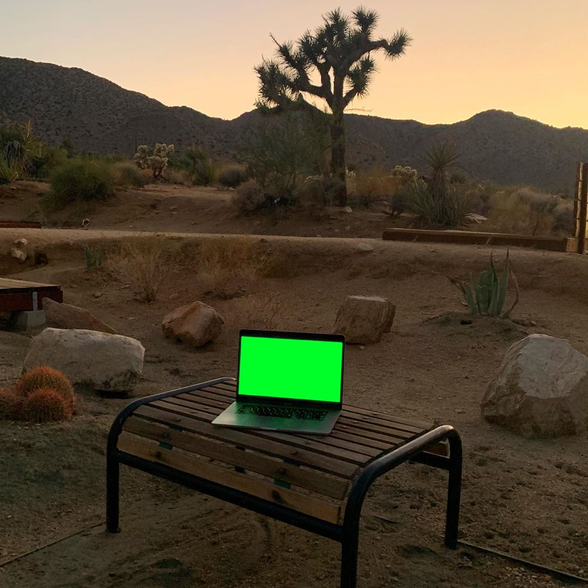
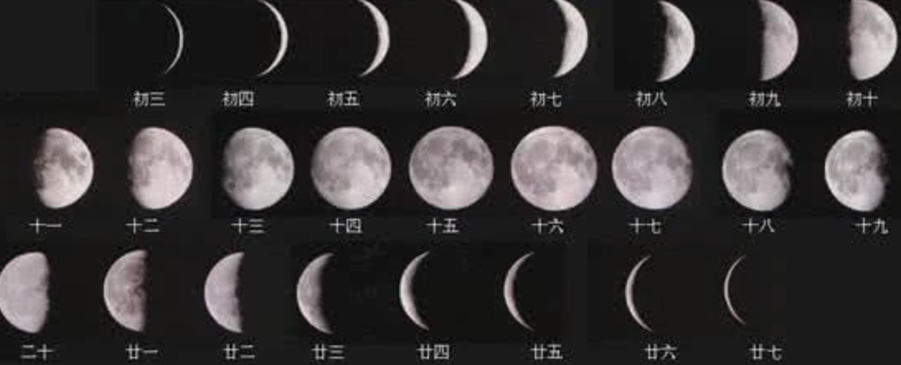

Graphic Design Work Pty Ltd is a design partnership between Stuart Geddes, Žiga Testen and an expanded network of collaborators. This is the first in a series of articles dedicated to exploring our core studio practice—publication design. This one details the publication designed with and for the Australian choreographer and dancer Shelley Lasica. Lasica’s work reveals a sustained exploration of dance, movement and the varying contexts in which they can occur. The publication ‘WHEN I AM NOT THERE’ has been produced to accompany a performance-exhibition at Monash University Museum of Art (MUMA) reflecting on forty years of Lasica’s choreographic practice.

(1)
As it accelerates it deteriorates
Shelley’s piece for the MUMA exhibition, ‘WHEN I AM NOT THERE’, is a new work made up of parts of old work. The new work is a kind of archival thing—to a certain extent, though not entirely. We were interested in doing something sympathetic to that with the book. Understanding an archive in a not-strictly-archival way. Making a new thing of it. One of the things that the materiality of the book gives us is a sense of movement through the archive.
Light travels easily through the internal pages of ‘WHEN I AM NOT THERE’. The book is printed on paper with high ‘show-through’—the visibility of printing on the reverse of a sheet of paper. The stock, notable for its uniquely low opacity, is designed by book designer Irma Boom. It has the rustle of tissue paper wrapping a recent purchase and the fine, lightweight handle of a bible paper. The book’s designers Stuart Geddes and Žiga Testen sourced the gossamer paper stock for its capacity to create unexpected moments between pages, inviting light through its fibres and layering the images and text of the book, blending them together, confusing its topography.
The lightness of the pages is a metaphor for the book’s subject: the fugitivity and ephemerality of a contemporary dance practice. The book anthologises the work of dancer and choreographer Shelley Lasica and arrived in Melbourne in August 2022, coinciding with Shelley’s performance-exhibition at MUMA. As a counterpart to the performance-exhibition, the book reflectively documents Lasica’s career and work, and can also be understood as archival.

‘Archive Species’ is an inquiry into the representation of clothed bodies in print media since the 1970s.
Across the last two decades there has been substantial reflection and consideration of the ‘archive’ as an expanded and critical form. Literature such as Markus Miessen and Yann Chateigné’s 2016 edited volume, ‘The Archive as a Productive Space of Conflict’ addresses how new archival activities challenge traditional notions of the archive and reimagine its materiality, and political and cultural capacity. This has been prompted, in particular, by the effects of new technological platforms and the rapid growth in information storage and retrieval systems. Miessen tells us that an archive can function ‘not as something static, a container of knowledge so to speak, but a set of materials that would talk to one another and could constantly be reanimated and put into parallel conversations in order to produce new meaning and relationships.’
‘Archive Species’ is an inquiry into the representation of clothed bodies in print media since the 1970s. Artist Joke Robaard and writer Camiel van Winkel have been re-assembling and re-reading the vast archive of fashion and newspaper images that Robaard has collected since 1979. Together, they selected images from the archive and arranged them into dynamic series or cycles, generating new narratives and unexpected pathways of signification.
Although many book projects on creative practices arguably have an archival dimension, there are some projects that position the archive as their main imperative. Dutch photographer Joke Robaard explores the form of an archive through the aesthetic language of a publication. ‘Archive Species: Bodies, Habits, Practices’ documents her own experimental archive of images of the body in fashion magazines. The book collects Robaard’s image material into new achronological arrangements. This, in turn, invites new interpretations of the printed representations of fashion and the body as its subject.
165 × 235 mm
704 pp + cover + jacket
176 pages printed 1+1 on Sixties 60 gsm
704 pages printed 4+4 on Sixties 60 gsm
Cover printed 4+0 on Materica Limestone 180 gsm
Jacket printed LED-UV 4+0 on Stucco Old Mill 200 gsm
Softcover sewn binding with cold glue
Hinge scored × 4
Jacket with flaps 10,5 cm glued to the spine
Graphic Design Work Pty Ltd is a design partnership between Stuart Geddes, Ziga Testen and an expanded network of collaborators. It is a design partnership in the making and in permanent flux. The practice wishes to critically interrogate the conditions and contexts within which graphic design is thought and produced today and propose a new studio/practice model. We aim to develop a graphic design practice that fosters and prioritises